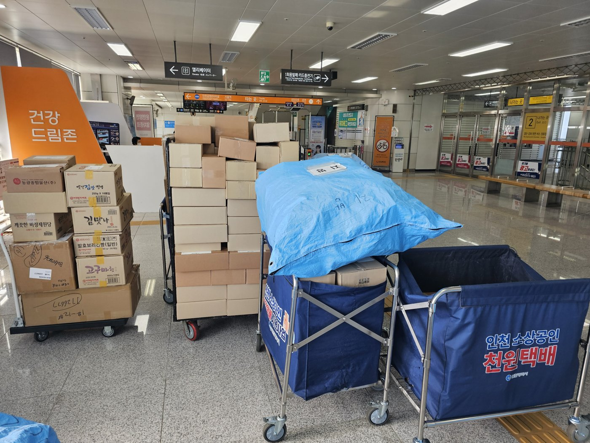
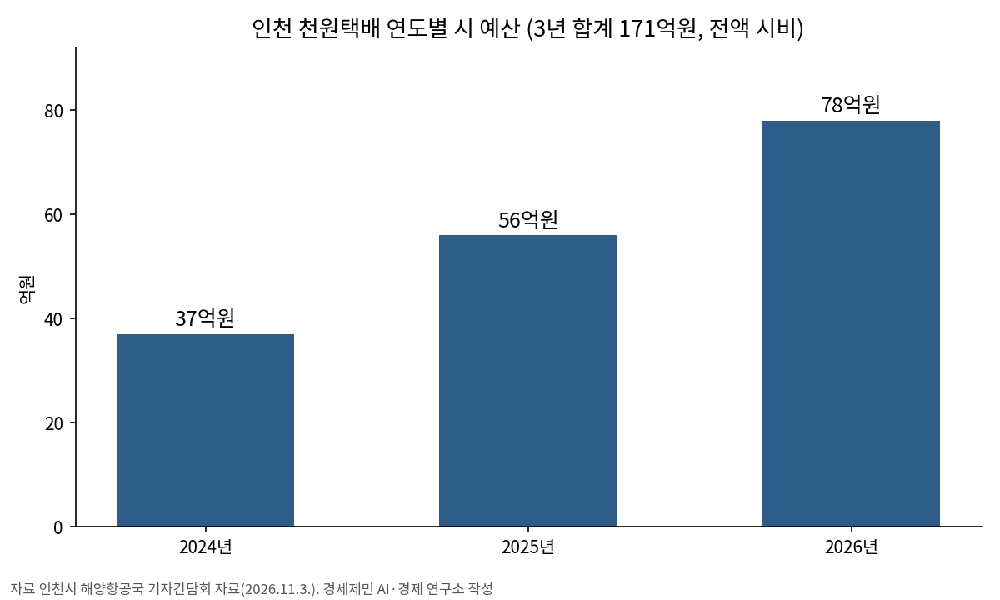

인천시, 천원택배 운영·배송체계 일원화…무인 집화·간편결제 도입
누적 배송 340만 건·가입업체 1만 곳 넘어
올해 1~9월 207만 건, 지난해 한 해 123만 건 넘어서
시 예산 3년 171억원…37억→56억→78억원으로 늘어
AI경제저널=김갑봉 기자 | 인천시(시장 박찬대)는 「인천 소상공인 공동물류센터(천원택배)」의 운영체계와 배송체계를 하나로 묶고 무인 집화시설과 간편결제를 도입한다고 3일 밝혔다.
시는 이날 해양항공국 기자간담회에서 차기 사업부터 운영 효율성과 이용 편의성을 높이는 방향으로 사업 구조를 고친다고 설명했다.
물류기업 인프라로 중복 비용 줄인다
시는 지금까지 따로 운영하던 집화·운영체계와 배송체계를 일원화한다. 물류기업이 가진 배송차량과 전산망, 고객센터를 활용해 중복 비용을 줄이고, 배송 전 과정의 관리와 책임을 강화한다는 계획이다.

산업단지와 전통시장, 지식산업센터처럼 지하철역과 먼 곳에는 무인 집화시설과 이동형 차량 집화서비스를 들인다. 카드와 간편결제 같은 결제수단도 늘린다.
천원택배는 소상공인의 택배 물품을 모아 인천지하철 역사를 물류 거점으로 배송하는 사업이다. 물량이 적어 택배사와 개별 계약을 맺기 어려운 소상공인을 돕는다. 강화·옹진은 대상에서 빠진다.
일반배송(5㎏ 이하, 세 변 합계 100㎝ 이하)은 건당 1000원, 수도권 당일배송은 2000원이다. 지하철역에 가기 어려운 소상공인에게는 방문 픽업도 제공한다.
1~9월 207만 건
시에 따르면 9월 말까지 누적 배송은 340만3154건이고 가입 업체는 1만372곳이다. 올해 1~9월 배송은 207만 건으로, 지난해 한 해 123만 건을 이미 넘었다. 한 달 배송량은 26만 건 수준이다.
사업은 2024년 10월 28일 인천지하철 30개 역에서 시작했다. 시는 지난해 11월 10일 집화센터를 1·2호선 60개 전 역사로 늘렸다. 지난해 7월에는 건당 지원 단가를 1000원에서 1500원으로 올렸다.
지역 일자리도 생겼다. 서포터즈 120명과 배송기사 27명, 집화관리자 12명, 관리인력 4명 등 163명이 일한다. 서포터즈는 어르신과 경력단절 여성 등으로 채용했다.
시 예산 3년 동안 2배로
해양항공국 기자간담회 자료를 보면 천원택배 사업 기간은 2024년 2월 1일부터 2027년 1월 31일까지 3년이고 민간에 위탁해 운영한다. 총예산은 171억원이며 전액 시비다.
연도별 예산은 2024년 37억원, 2025년 56억원, 2026년 78억원이다. 배송 물량이 늘면서 2년 만에 시 예산이 2.1배가 됐다(연구소 계산). 현 위탁 기간은 2027년 1월 31일 끝난다. 시는 이번 개편을 차기 사업부터 적용한다.
시는 운영과 배송을 일원화해 물류기업 인프라를 쓰면 예산을 줄일 수 있다고 설명했다.
박광근 시 해양항공국장은 "단순한 택배비 지원사업에 머물지 않고, 저렴한 배송비와 편리한 디지털 물류 인프라를 결합한 인천형 생활물류 플랫폼으로 발전시켜 나가겠다"고 말했다.

참고문헌
- "인천 소상공인 공동물류센터(천원택배) 운영·배송체계 일원화 및 생활물류 서비스 고도화", 인천시, 2026.11.3., https://www.incheon.go.kr/IC010205
- "해양항공국 기자 간담회 자료", 인천시 해양항공국, 2026.11.3.
- ""배송 200만건·매출 13.9%↑"… 인천시 '천원택배' 소상공인 구원투수 입증", 인천시, 2026.4.19., https://www.incheon.go.kr/IC010205/view?repSeq=DOM_0000000014565023
- "인천시, 전국 최초 천원택배 2단계 확대 시행", 인천시, 2025.11.10., https://www.incheon.go.kr/IC010205/view?repSeq=DOM_0000000013475196
[사진 출처]
- [사진1] 인천시, 「인천 소상공인 공동물류센터(천원택배)…」 보도자료 사진자료 「소상공인 공동물류센터 (1)」, 2026.11.3., 공공누리 제1유형(출처표시)
관련기사
- 인천 10월 소비자물가 2.7% 올라…외식 뺀 개인서비스는 4.0%로 수도권 최고
- 박인서 인천항만공사 사장 취임…"미해결 현안 푸는 해결사 되겠다"
- 누적 수출 9000억 달러 첫 돌파…인천 비중은 5.1%로 낮아져
- 인천신용보증재단, 소상공인 495억원 협약보증 2일부터 접수
저작권자 © AI경제저널 무단전재 및 재배포, AI학습 및 활용 금지